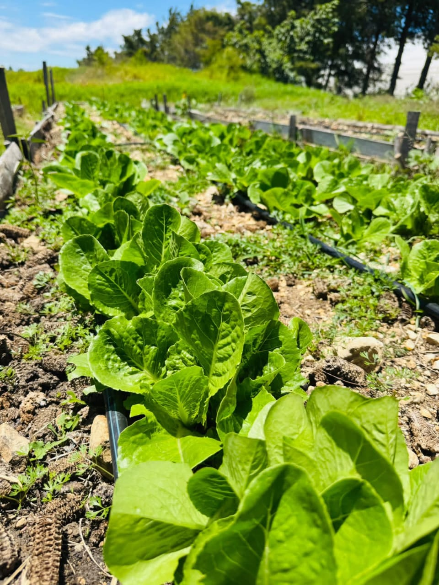

¿Quiénes somos?
RADI TERRA es una iniciativa enfocada en el aprovechamiento de residuos poscosecha del cultivo de hongos comestibles, mediante su transformación en un sustrato destinado al sector agrícola. Buscamos generar valor a partir de materiales que pueden ser aprovechados nuevamente, ofreciendo una alternativa innovadora que integra agricultura, sustentabilidad y economía circular.